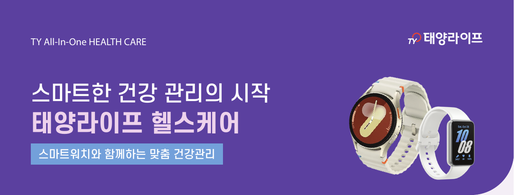

01
MEDICAL LITERACY
의료 현장 이해
외과계 중환자실에서 수술 환자와 간, 신장이식 환자를 간호했습니다. 의료진의 언어와 병원 업무 흐름을 이해합니다.
Healthcare Business Planner / Solution Sales
외과계 중환자실 간호사로 출발해 18년 동안 디지털 헬스케어 서비스 기획과 B2B 운영을 맡았습니다. 의료진과 고객의 요구를 파악해 제안서, 서비스 구조, 운영 방식으로 구체화해 왔습니다.

01 / CORE CAPABILITIES
의료 전문성을 출발점으로, 서비스 기획과 고객 운영을 하나의 실행 흐름으로 연결합니다.
MEDICAL LITERACY
외과계 중환자실에서 수술 환자와 간, 신장이식 환자를 간호했습니다. 의료진의 언어와 병원 업무 흐름을 이해합니다.
SERVICE ARCHITECTURE
삼성헬스, 수면관리, 건강검진, 만성질환 관리 서비스를 기획했습니다. 알고리즘과 화면 설계부터 일정, 인력, 운영 개선까지 경험했습니다.
CONSULTATIVE SALES
제안서와 RFP를 작성하고 기업 고객의 프로그램을 운영했습니다. 고객 요구를 파악해 안내 방식과 운영 구조를 조정했습니다.
02 / HOW I WORK
현장과 고객 이해
의료진과 고객의 업무 맥락, 실제 사용 환경을 듣습니다.
03 / SELECTED WORK
수치보다 과정에 집중했습니다.
카드를 눌러 문제·행동·결과를 확인하세요.

출처: 태양라이프 갤럭시케어 안내장(2026.06.11). 안내장 예시 화면이며 실제 고객 기록이 아닙니다. 혈압·혈당은 직접 기록한 값에 한해 기준 외 알림을 제공합니다. 측정값과 알림은 건강관리 참고용으로, 질병 감지·진단·치료 또는 응급출동·구조·119 신고 대행 서비스가 아닙니다. 보호자 알림은 동의·등록 시 제공됩니다.


첨부 서비스 소개서(2026.07.13)에서 발췌한 기획 이미지입니다. 제안 기능을 보여주며 출시 여부나 검증된 안전 성능을 뜻하지 않습니다.
이미지 출처: 삼성화재 애니핏 프로 공식 소개 ↗ · © 삼성화재. 공식 공개 예시 화면이며 본인이 디자인한 화면이나 실제 고객 기록을 의미하지 않습니다. 담당 업무는 제공한 경력기술서를 기준으로 작성했습니다.
04 / WHY QLOGIC
의료 현장 경험과 서비스 기획, 데이터 기반 운영 역량을 구매·물류 플랫폼의 고객 가치로 연결합니다.
01 LISTEN
의료 현장 경험을 활용해 제품의 사용 맥락과 실제 불편을 이해합니다.
02 DESIGN
서비스 기획과 제안서 경험을 활용해 병원 유형별 설명과 제안 구조를 만듭니다.
03 IMPROVE
데이터 기반 건강관리 운영 경험을 활용해 현장 피드백을 운영 개선 과제로 연결합니다.
DAY PLAN
입사 후 기여안
병원 구매, 물류, 사용부서 흐름과 고객 Pain Point를 파악합니다.
병원 유형별 제안 패키지와 영업 자료를 정리합니다.
고객 확장 제안과 현장 피드백을 Q-Platform 개선 과제로 연결합니다.
05 / EXPERIENCE
현장 전문성, 서비스 설계, 고객 운영을 단계적으로 확장해 온 경력입니다.
AWARDS & CREDENTIALS
LET'S BUILD THE NEXT FLOW
의료 전문성, 서비스 기획, 고객 커뮤니케이션 경험을 바탕으로 큐로직의 플랫폼과 제품이 현장에 안착하는 과정을 함께 만들겠습니다.